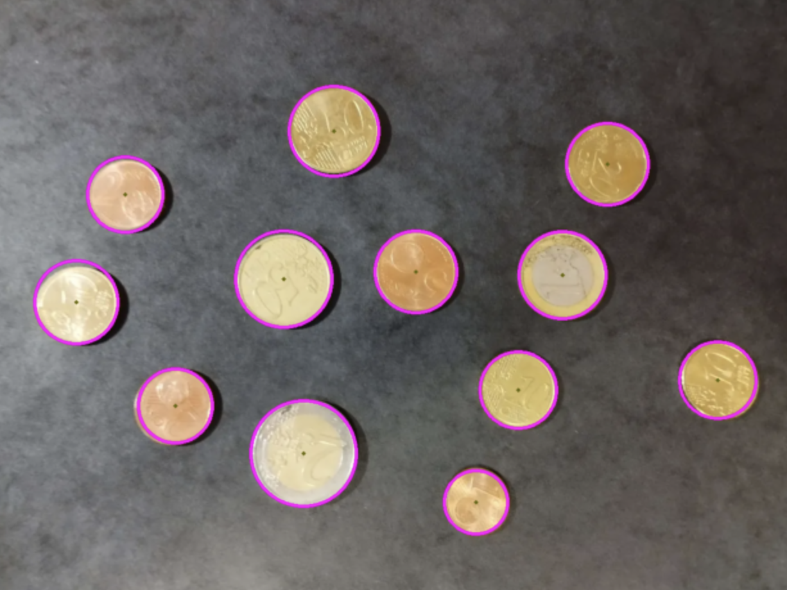
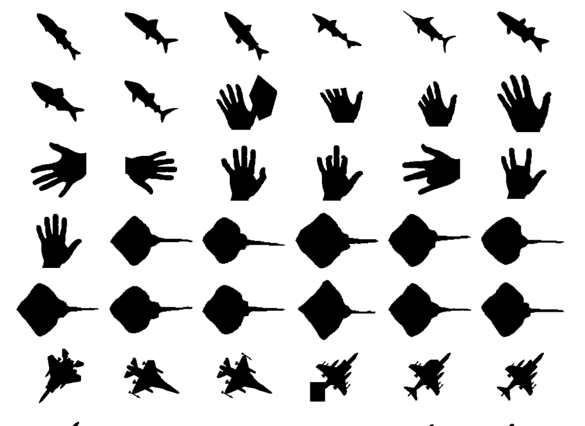
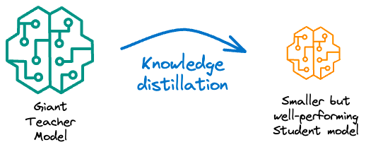
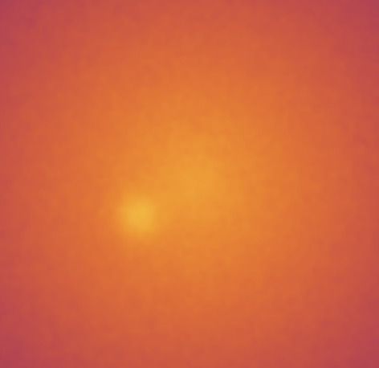
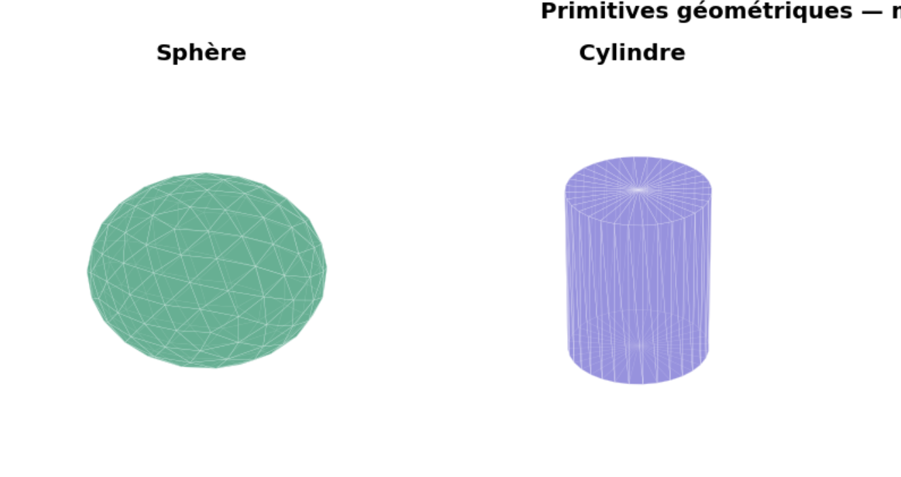

Hi there — I'm Rica
I'm a computer vision and AI student based in Paris.
I pivoted from backend development into the world of
matrices and tensors, and found my obsession
in teaching machines to see and understand visual data.




